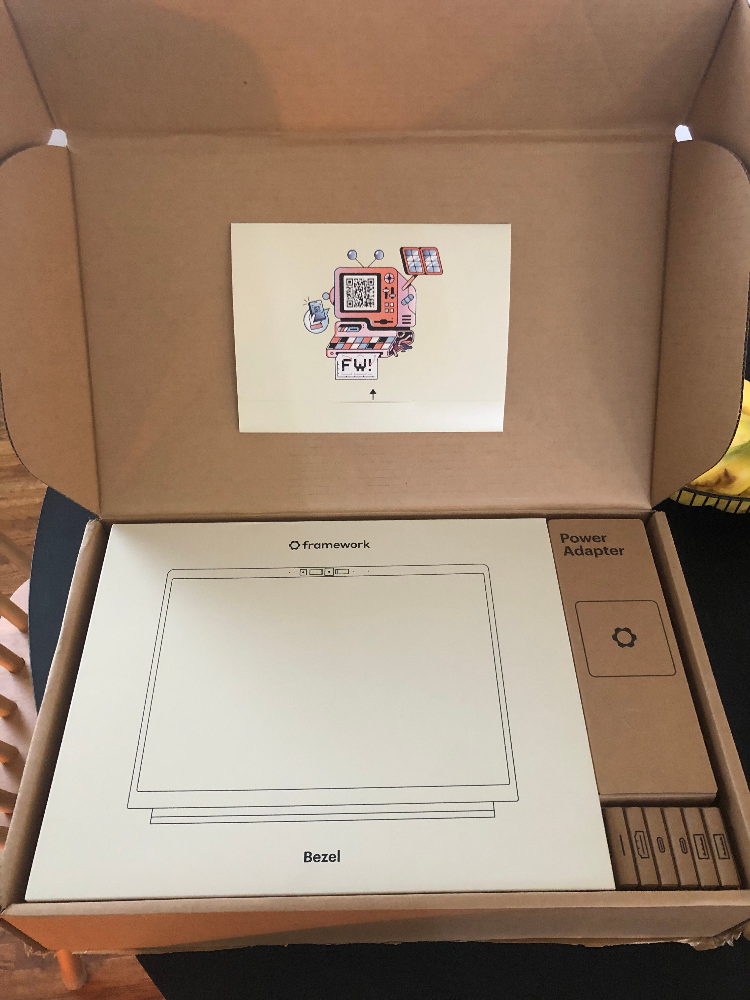
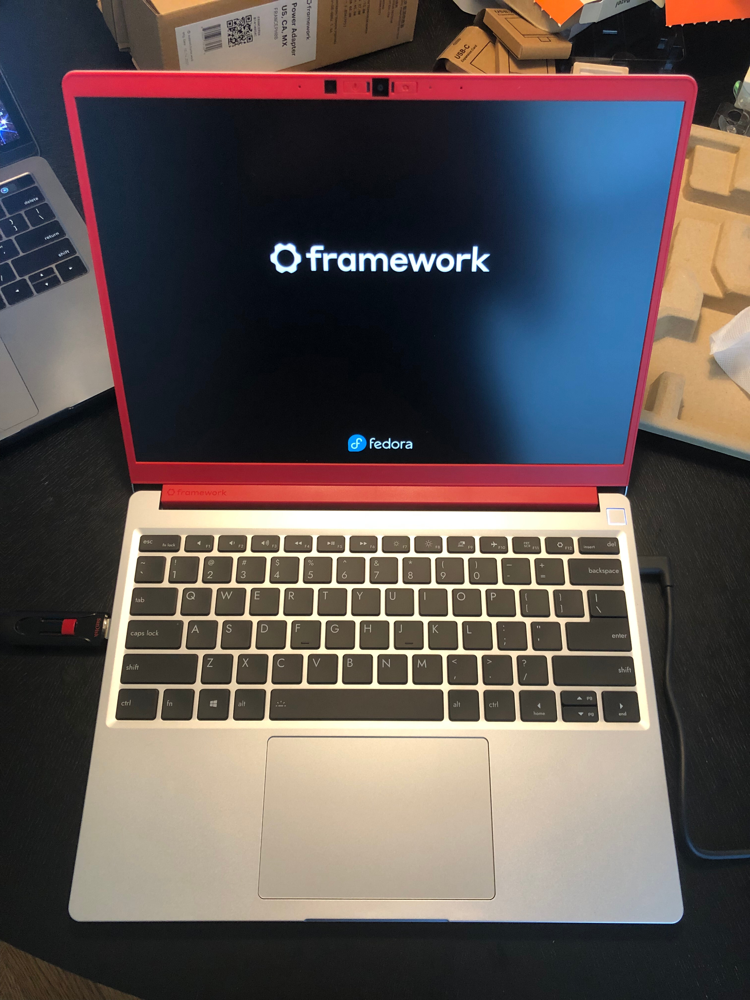

I recieved my Framework Laptop 13 today! I decided to write a blog post about it becuase it seemed like a fun idea :)
I really liked how they organize everything in the box, definitely felt professional. And free stickers?? Heck yeah!
The build was actually much easier than I thought it would be. All of the instructions are pretty clearly laid out on the website. As a lot of people said, the bezel is pretty flimsy, although when you put it on the laptop you can't tell at all. The only problem I had while putting it together was the input cover not fitting in perfectly, but that fixed itself as soon as I screwed it in.
Here's a picture of the completed build:
I didn't even check to see what happens if you don't have an operating system installed yet, I went ahead and booted from USB. The system took about a minute to boot, but this was because it was doing "memory training" (that's what they said online, anyway :P). It installed Fedora 38 Cinnamon without a hitch.
Fedora 38 worked flawlessly! I was able to get completely moved into the laptop in about 30 minutes (but this was mainly due to a poor WiFi connection when downloading package updates and copying stuff over from my old computer). It may have been just because I've been using ~10 year old hardware for a long time, but MAN it is so fast! Even the base CPU (i5-1340P) is lightning quick when opening apps such as Firefox, which normally takes a long time.
Here's how the Laptop 13 handled some of the games I own:
I also tried running OBS in the background, recording at 60 FPS, 1920 x 1280. Next to no frame drops on anything, which is a pretty massive deal! Maybe I can start doing YouTube stuff again :)